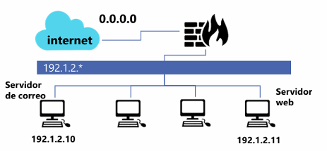

> CNO V - Seguridad Informática _
> Universidad Politécnica de San Luis Potosí _
> Octavo semestre _
Actividad 04 | Filtrado de Paquetes con Iptables
La defensa en profundidad de una infraestructura de red requiere el control estricto del tráfico que entra y sale de la organización. En el ecosistema Linux, iptables es la herramienta estándar para interactuar con el framework Netfilter del kernel, permitiendo definir reglas de filtrado de paquetes (firewall) y traducción de direcciones de red (NAT).
El objetivo de esta actividad es aplicar políticas de filtrado (firewall) , tomando diferentes escenarios posibles.
Teniendo en cuenta la topología de red mostrada completa la tabla con las reglas de iptables que deberían aplicarse en el Firewall para llevar a cabo las acciones solicitadas. Las reglas, siempre que sea posible, deben determinar protocolo, dirección IP origen y destino, puerto/s origen y destino y el estado de la conexión.

Imagen 1: Topología de red.
| No. | Requerimiento | Regla |
|---|---|---|
| 1 | Establecer una política restrictiva. | iptables -P DROP |
| 2 | Permitir el tráfico de conexiones ya establecidas o relacionadas. | iptables -A FORWARD -m state --state ESTABLISHED, RELATED -j ACCEPT |
| 3 | Aceptar tráfico DNS (TCP) saliente de la red local. | iptables -A FORWARD -p tcp -s 192.1.2.11 --dport 53 -j ACCEPT |
| 4 | Aceptar correo entrante proveniente de Internet en el servidor de correo. | iptables -A FORWARD -p tcp -d 192.1.2.10 --dport 25 -j ACCEPT |
| 5 | Permitir correo saliente a Internet desde el servidor de correo. | iptables -A FORWARD -p tcp -s 192.1.2.10 --dport 25 -j ACCEPT |
| 6 | Aceptar conexiones HTTP desde Internet a nuestro servidor web. | iptables -A FORWARD -p tcp -d 192.1.2.10 --dport 80 -j ACCEPT |
| 7 | Permitir tráfico HTTP desde la red local a Internet. | iptables -A FORWARD -p tcp -s 192.1.2.0/24 --dport 80 -j ACCEPT |
El saber configurar firewalls mediante las iptables es importante para la buena administración de los sistemas y su seguridad. En esta actividad, la aplicación de políticas utilizando DROP, demostró ser la estrategia más segura, ya que se tiene que decir quienes son los que pueden enviar o recibir información entre redes.
Además, el uso del módulo de estado (-m state) es importante para la eficiencia del firewall, ya que permite gestionar el tráfico de las conexiones.